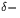
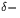

In the absence of impurities, especially those with tensile strain fields which promote oxygen aggregation, the first oxygen complex to be formed is likely to be a dimer. In this section we explore its stability and kinetics of motion.
An oxygen dimer consisting of two neighbouring BC sited Oi was
placed at the centre of the cluster and subsequently relaxed. The
lowest energy structure was a `puckered dimer' structure, where both
oxygen atoms sit bond centred in a kinked Si-O-Si bond, with the kinks
pointing in the same direction along 110 . Rather than having
equal Si-O bond lengths as Oi, each atom has one short and one long
bond, the short bond being formed with the shared central Si atom (see
Figure 6.4). This strong bonding is due to the quadropole
interaction between the two oxygen atoms; both draw charge from their
Si neighbours making them
. Rather than having
equal Si-O bond lengths as Oi, each atom has one short and one long
bond, the short bond being formed with the shared central Si atom (see
Figure 6.4). This strong bonding is due to the quadropole
interaction between the two oxygen atoms; both draw charge from their
Si neighbours making them  , and thus their shared Si becomes
extremely positively polarised. The stability of the dimer is thus
attributed to the creation of a [011] chain of aligned polar bonds as
in
Si-O-Si-O-Si.The defect is electrically neutral with no gap levels. It is notable
from the shift in position of the Si atoms compared to the ideal
lattice that the defect has a strong strain field in the 001
, and thus their shared Si becomes
extremely positively polarised. The stability of the dimer is thus
attributed to the creation of a [011] chain of aligned polar bonds as
in
Si-O-Si-O-Si.The defect is electrically neutral with no gap levels. It is notable
from the shift in position of the Si atoms compared to the ideal
lattice that the defect has a strong strain field in the 001 direction. However along 110
direction. However along 110 its strain field is directional;
`behind' the dimer the Si atoms show very little displacement from
their ideal sites, but there is a large displacement in front of it.
This suggests that as the dimer moves through the lattice it produces
in front of it a large `bow wave' of lattice compression.
its strain field is directional;
`behind' the dimer the Si atoms show very little displacement from
their ideal sites, but there is a large displacement in front of it.
This suggests that as the dimer moves through the lattice it produces
in front of it a large `bow wave' of lattice compression.
During our investigation we also found a stable symmetric dimer structure, shown in Figure 6.7. However this is 0.259 eV higher in energy than the assymetric case (and has vibrational modes that disagree with experiment). This is discussed further below with reference to the 1105 cm-1 mode defect. It exhibits the same strong binding to the shared Si atom. The influence of cluster size on the energy of the dimer was investigated by displacing it so that it is centred on a nearby Si atom, i.e. it is displaced by a/4 (0 1 1). This energy changed by less than 0.08 eV, showing the cluster surface has negligible effect.
This puckered structure is consistent with work by Needels et al
[115], but in contrast to Greens Function calculations by
Kelly [114] as well as previous AIMPRO calculations on the
dimer [156], who both found a symmetric C2v structure.
This is discussed further in Section 6.4.1 below.
Seperating the dimer by one Si-Si bond along 110 raised the
cluster energy by 1.7 eV, which is a crude first estimate at a binding
energy. However such energy differences are very dependant on the
number of bond centred fitting functions used, and the error on such a
value may be large. This compares to a dimer binding energy of
2.25 eV for earlier AIMPRO calculations [156] (the energy
difference between the dimer and a Si-O-Si-Si-O-Si structure) and
1.0 eV by Needels et al [115] (see
Section 6.1.2).
raised the
cluster energy by 1.7 eV, which is a crude first estimate at a binding
energy. However such energy differences are very dependant on the
number of bond centred fitting functions used, and the error on such a
value may be large. This compares to a dimer binding energy of
2.25 eV for earlier AIMPRO calculations [156] (the energy
difference between the dimer and a Si-O-Si-Si-O-Si structure) and
1.0 eV by Needels et al [115] (see
Section 6.1.2).
The vibrational modes of the asymmetric dimer are given in Table 6.4. The associated eigenvectors are shown in Figure 6.5. As can be seen, the top two modes roughly correspond to assymetric stretch modes for the inner and outer O atoms respectively. The modes are in good agreement with the experimental values for the 1012 cm-1 defect, including the shifts with 16OO. There are some calculated modes which are not observed, however these have a lower (dipole moment)2 and thus absorption intensity. Thus these modes serve to confirm that the 1012 cm-1 defect is indeed the puckered oxygen dimer.
There is a problem however with the mixed dimer modes; experimental FTIR on mixed 16O / 18O samples show no mixed mode absorption. This suggests the atoms are decoupled in some way, e.g. through greater seperation than that of the puckered dimer. Current models of the O-H defect suggest that O and H sit in bonds on opposite sides of a hexagonal interstitial ring site [157]. A possible alternative dimer model would be two O atoms in these positions, which is shown schematically in Figure 6.6. Their strain fields could couple in this way, and if the one buckled into the hexagonal site through Coulombic interaction with the Si neighbours of the other O atom, this would push the other atom to buckle outwards. Thus the two would be inequivilent, leading to the observed experimental mode splitting. In this case rapid migration could still occur with the puckered dimer structure, which would split to give this hexagonal ring as the stable structure. We are currently investigating such a model.
| 16O | 17O | 18O | 16O18O | 18O16O | Intensity | |
| 4lExperimental [151] | ||||||
| 1 | 1059.6 | 48.1 | 0.9 | |||
| 2 | 1012.5 | 43 | 1.0 | |||
| 3 | 685 | 10 | 0.08 | |||
| 4 | 552 | 0.5 | 0.15 | |||
| 4lAssymetric Dimer | ||||||
| 1 | 1069.3 | 24.8 | 47.2 | 8.9 | 33.2 | 1.16 |
| 2 | 921.3 | 21.8 | 41.6 | 30.9 | 15.7 | 1.00 |
| 746.4 | 10.3 | 19.3 | 13.5 | 5.3 | 0.26 | |
| 3 | 649.6 | 5.4 | 10.2 | 4.1 | 6.7 | 0.33 |
| 4 | 592.6 | 1.6 | 2.8 | 0.1 | 2.7 | 0.50 |
| 551.0 | 3.9 | 7.5 | 1.0 | 6.5 | 0.07 | |
| 4lSymmetric Dimer | ||||||
| 1169.6 | 27.4 | 52.3 | 18.6 | 20.0 | 1.00 | |
| 1077.9 | 27.6 | 52.6 | 33.8 | 32.5 | 0.76 | |
| 643.9 | 0.8 | 1.5 | 0.8 | 0.6 | 0.42 | |
| 637.7 | 3.0 | 5.3 | 2.7 | 2.9 | ||
| 581.3 | 5.3 | 9.9 | 4.7 | 4.7 | ||
| 536.0 | 7.5 | 14.2 | 7.0 | 6.8 | ||
| 4lSplit Dimer | ||||||
| 1201.5 | 26.7 | 50.9 | 23.1 | 8.2 | ||
| 1152.0 | 26.0 | 49.4 | 28.7 | 40.3 | ||
| 647.4 | 6.5 | 11.7 | 7.0 | 4.5 | ||
| 632.1 | 5.7 | 10.5 | 8.1 | 1.5 | ||
| 622.2 | 3.2 | 6.9 | 2.2 | 5.2 | ||
| 569.6 | 2.2 | 4.1 | 2.7 | 1.7 | ||
| 539.7 | 4.4 | 8.3 | 4.1 | 4.5 |
 |